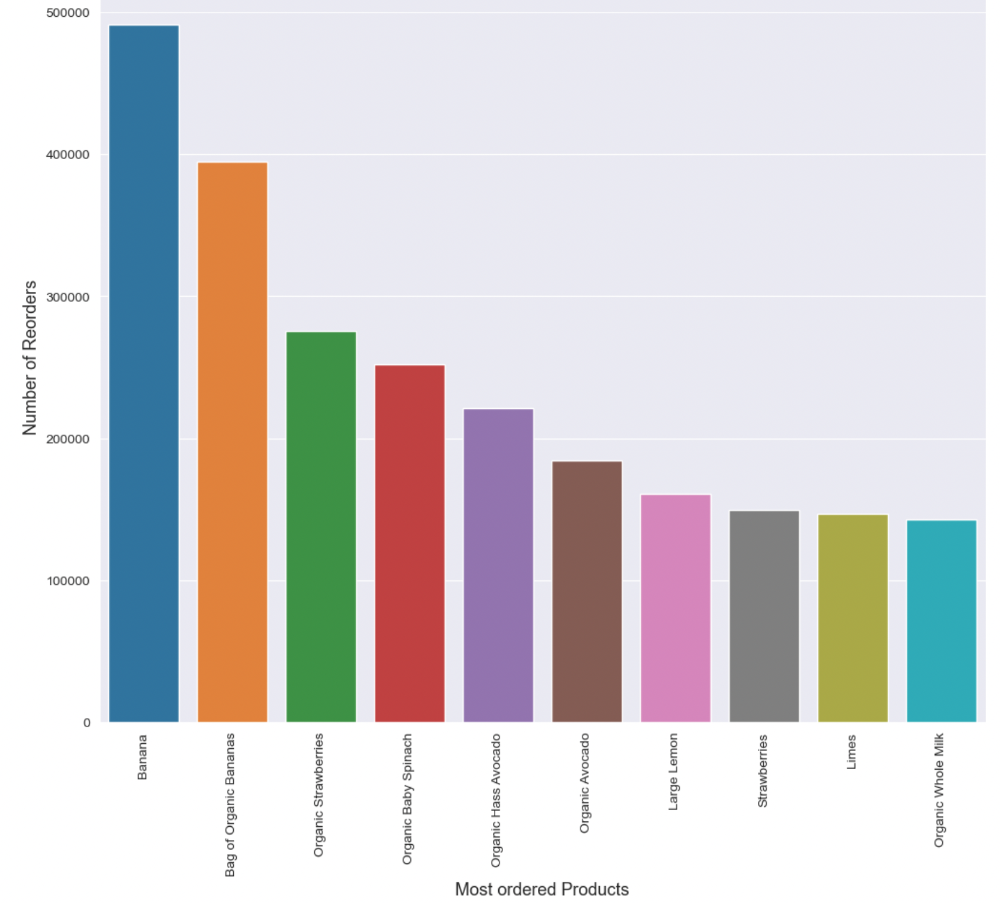
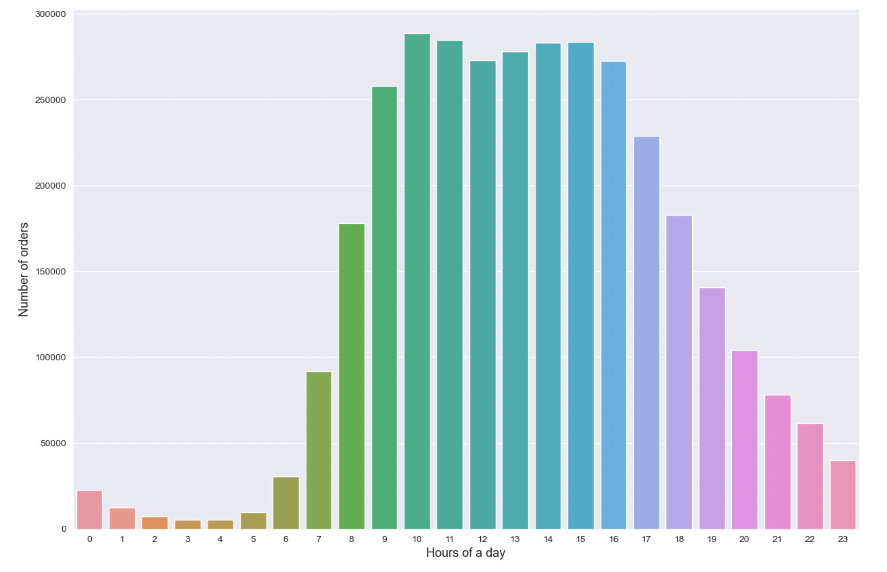
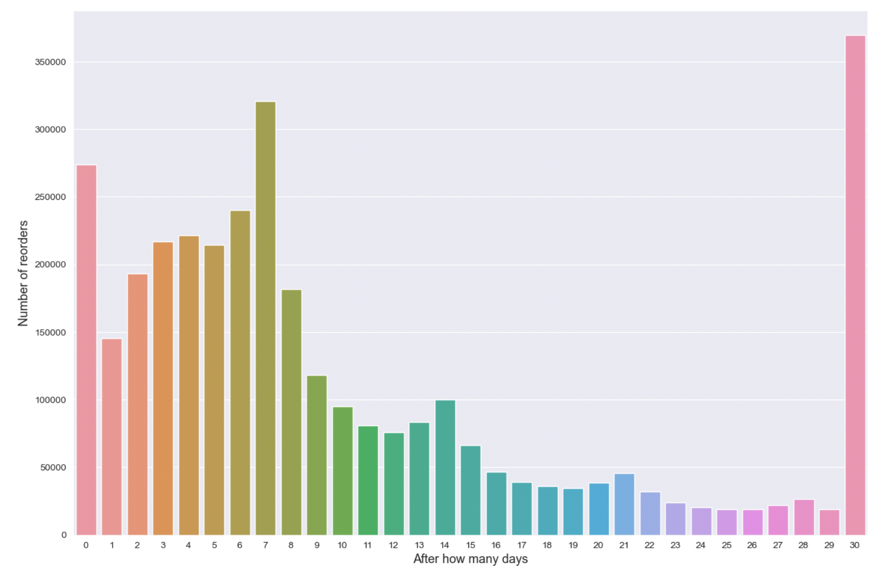
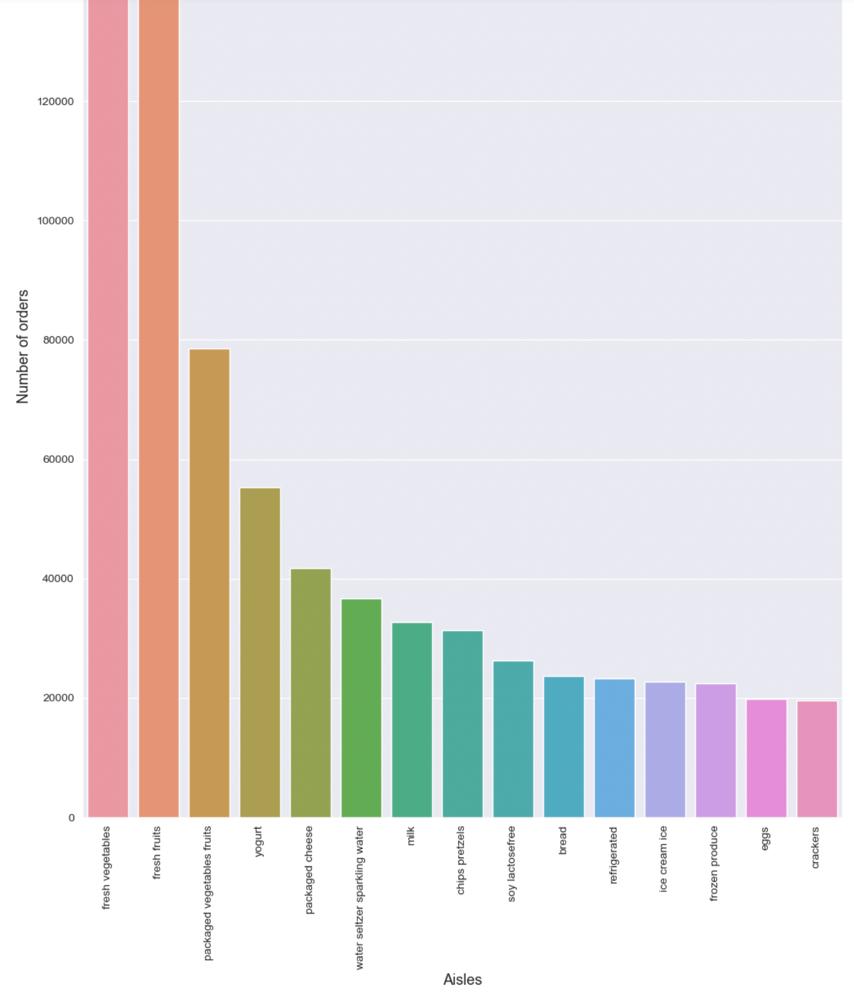

Backstory
Have you ever walked the aisles of a Target, or Safeway, or your grocery store of choice, and
wondered which products were in other people's shopping carts?
What're they making for dinner tonight? What's a popular brand of salsa? Which crackers pair well with this spread?
Hopefully, that's not just me. It's even more interesting when we can do this at scale: to see the
trends that can be extrapolated from aggregating tons of data on people's individual choices and habits.
Come along with me as I take a peek into the shopping carts of a few hundred thousand people.
The Data
We will be analyzing a dataset containing 3 million orders from 200,000 Instacart
users. These orders were anonymized and the data include things like the products within these orders,
the aisles and departments these items are found in, and the days and times that these orders were completed.
Key Questions
Some key questions I will answer:
- Which items are the most popular? What are some ways we can measure this?
- Are there sections of the store that are most popular?
- Is there a day and a time of day that are most popular for shopping?
Most Ordered
After our library imports, file read-ins, and initial peek at our data, one of the first things we want
to take a look at is:
which products were the most ordered?
In the chart to the right,
produce seems to be very popular: bananas, strawberries, spinach, avocados, and lemons are all
among the top 10 most ordered products.

Most Popular Time of Day
Next, we want to see which time of day is the most popular for users to place
their orders.
In the chart to the right, we see that the most popular times are between 9am and 4pm.

Most Popular Interval For Reordering
We were also curious about users' reorders of the same products, specifically: what were the most
common intervals of time between an order and a reorder of that same product by a given
user?
In the chart to the right, we see that the most common interval is 1 month, followed by 1 week
(30 days and 7 days respectively.)

Best-selling Aisles
Finally, we want to see which aisles were the best-selling
in terms of user orders.
In the chart to the right, we see that both fresh and packaged fruits and vegetables,
yogurt, cheese, and sparkling water are among our best-selling aisles.

Conclusion
Summary of findings:
Okay, so we saw some of our most pressing questions answered. People sure like their fruits and
veggies, and they also like to put their Instacart orders in while they're at work.
I answered many more questions similar to these, so click here to see the full
analysis in the Jupyter notebook.
Otherwise, I have listed a summary of our findings below.
Summary of findings:
User ordering trends
- Most orders are made between 9am and 4pm
- The most common number of total orders across users is 4
- The most common number of products in an order is 5
- 59% of all ordered products are reorders (they were previously ordered by that user)
- The most common interval of time between an order and a reorder of that same product is
either 1 week or 1 month
The best-selling departments (top 5)
- Produce
- Dairy & eggs
- Snacks
- Beverages
- Frozen
The best-selling aisles within each department (arbitrarily picking 5 depts)
- Bakery: bread
- Alcohol: beer cooler
- Beverages: tea
- Canned goods: soup broth
- Dairy & eggs: yogurt
The best-selling aisles overall (top 5)
- Fresh vegetables
- Fresh fruits
- Packaged vegetables/fruits
- Yogurt
- Packaged cheese
Aisles with the most products across all departments (top 5)
- Candy/chocolate
- Ice cream
- Vitamins/supplements
- Yogurt
- Chips
The most ordered products (top 7)
- Bananas
- Strawberries
- Spinach
- Avocados
- Lemons
- Limes
- Milk
The most reordered products (top 7)
- Serenity Overnight Pads
- Chocolate Love Bars
- Maca Buttercups
- Benchbreak Chardonnay
- Organic Blueberry B'Mega (drink)
- Fragrance Free Clay
- Thousand Island Salad Snax
- Most orders are made between 9am and 4pm
- The most common number of total orders across users is 4
- The most common number of products in an order is 5
- 59% of all ordered products are reorders (they were previously ordered by that user)
- The most common interval of time between an order and a reorder of that same product is either 1 week or 1 month
- Produce
- Dairy & eggs
- Snacks
- Beverages
- Frozen
- Bakery: bread
- Alcohol: beer cooler
- Beverages: tea
- Canned goods: soup broth
- Dairy & eggs: yogurt
- Fresh vegetables
- Fresh fruits
- Packaged vegetables/fruits
- Yogurt
- Packaged cheese
- Candy/chocolate
- Ice cream
- Vitamins/supplements
- Yogurt
- Chips
- Bananas
- Strawberries
- Spinach
- Avocados
- Lemons
- Limes
- Milk
- Serenity Overnight Pads
- Chocolate Love Bars
- Maca Buttercups
- Benchbreak Chardonnay
- Organic Blueberry B'Mega (drink)
- Fragrance Free Clay
- Thousand Island Salad Snax